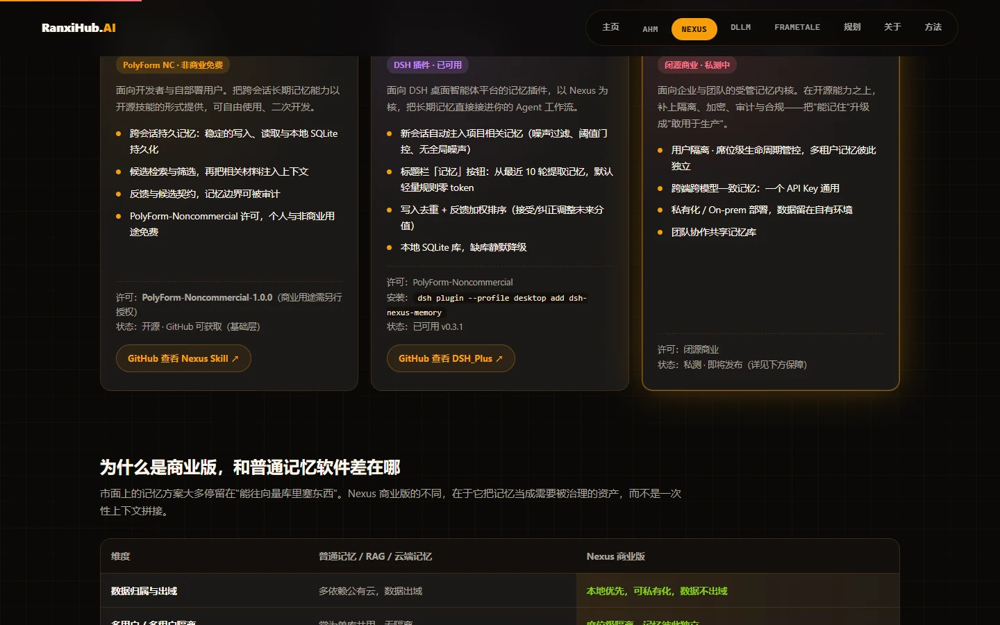

P1In development
DLLM model series
The first validation release is published and passed controlled comparison tests. Engineering of the model series and memory injection continues.
Independent AI Systems / 2026
RanxiHub starts with memory infrastructure and extends toward personal models that carry a user's own memory (DLLM) and physical-world networking. Each node is its own product line; together they form the infrastructure for the next generation of AI workflows.
PROJECT MATRIX
From governance and memory products we can demonstrate today, to creative and interactive systems still being built. Each project keeps its own boundary, while all share one standard: long-horizon capability, verifiability and real-world usefulness.

Agent Health Monitor. Structured diagnostics and local evidence help small teams move an Agent from prototype to an observable, regressive-testable system.

A local-first long-term memory layer. Agents can retain, explain and stay auditable and regressive-testable across iterations.

A personal model that carries the user's own memory. The first validation release is published and the model series is in development; memory ships with the model, so every call is a memory call.

FrameTale for continuous creation, the Digital Life concept, and the DSH-PLUS desktop plugin set - three side projects built on the same memory core and method.
PROJECT ROADMAP / IN DEVELOPMENT
Nexus and AHM are the starting point: they generate foundational data and early revenue. The main line now turns on DLLM - the diagram shows how a system under continuous development grows outward from a single core. Planned items are directional only and do not represent delivered capability.
The Nexus memory core plus AHM diagnostics generate real usage data and early revenue.
Pre-launch validationA series of models with memory injection; one API key, across devices and models.
Validation release publishedMemory interconnection over a LAN or self-hosted server, kept consistent across devices.
v1.0 developer preview publishedExtended validation of on-device scheduling, networking transport and IoT directions.
PlannedThese projects are planned or at an early stage. They are shown as directions only, with no detailed specification or delivery commitment.
The first validation release is published and passed controlled comparison tests. Engineering of the model series and memory injection continues.
A modular cognitive network for cross-device agents has a v1.0 developer preview (498 tests passing) and remains under validation.
The storyboard pipeline runs end-to-end (shot contracts / asset memory / consistency gates) and is in closed beta, moving toward long-form narrative continuity.
Memory interconnection for teams and organisations: connect a self-hosted primary memory, then extend to multi-device collaboration.
Validating cross-device scheduling and transport for on-device models, with early PoCs in real settings.
Early exploration of on-device models in assistive settings, validated in small steps against real needs.
Early validation of design generation and overnight autonomous tasks; the method feeds back into the main product line.
RANXIHUB LAB
Technology here is not decoration. Every product line starts from a real workflow and makes long-term state, result boundaries and evolution visible and judgeable.
Whether the system still works after repeated use, multiple feedback rounds and longer time spans - not just a single demo.
Keep critical data and capabilities in the user's own environment where possible, avoiding unnecessary lock-in and hidden costs.
Separate what is validated, what is being validated and what is not promised, so every claim has a clear boundary.
CONTACT
Product feedback, a possible collaboration, or a question about putting Agent memory to work. This form opens a draft in your email client - nothing is sent automatically.